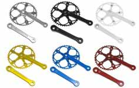

Bielas
Biela sugino pista. Ref 8977008
Bielas Pro-Wheel Urban. Ref 7876651

Biela cláscia single speed ancho. Ref 0977223
Piñones
Piñón fijo. Ref 6665462
Piñón para rueda contra pedal. Ref 79918820
Piñón fijo Halo, especial pista. Ref 0083232

Caja de pedalier
Eje de pedalier cuadradillo BSA con tornillos. Ref 34334553
Eje de pedalier monoblock BSA. Ref 79922320
Caja de pedalier NECO compatible con shimano. Ref 3383232